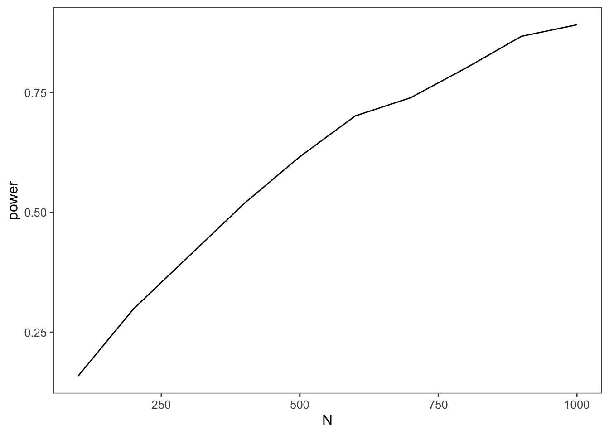
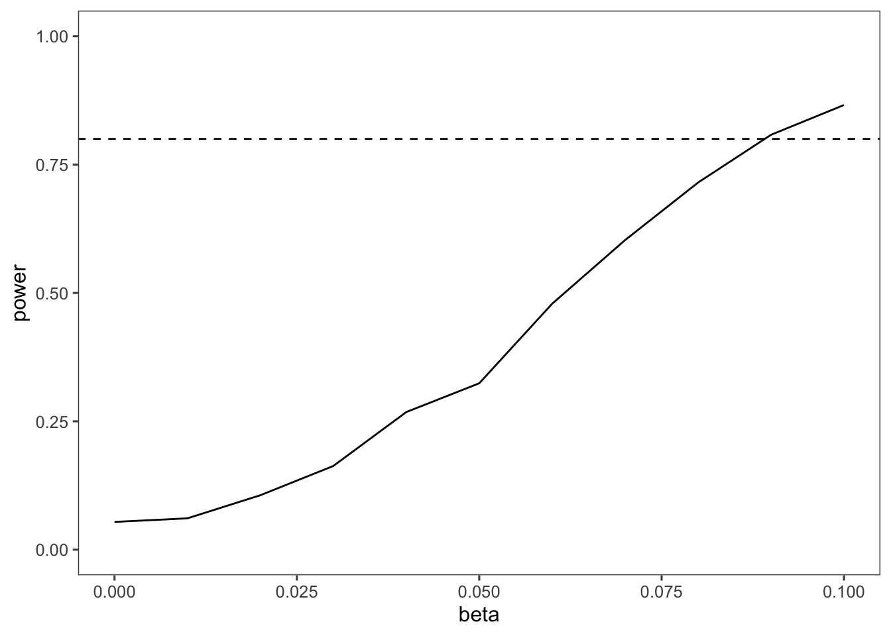

library(mcreplicate)
library(tidyverse)
library(tictoc)
library(CVXR)Using Simulation to Calculate Power and Minimum Detectable Effects
This posting will walk through the steps to perform power and minimum detectable effect calculations via simulation.
Define the Data Generation Process
params <-
list(
n = 100,
p = 1,
beta = 0
)Now we define the data generation process formula:
dgp <- function(params) {
with(params,{
X <- matrix(rnorm(n * p), nrow=n)
colnames(X) <- paste0("beta_", beta)
Y <- X %*% beta + rnorm(n)
data.frame(Y,X)
})
}Define the Estimator
est <- function(df) {
Y <- df[,"Y"]
X <- as.matrix(df[,setdiff(colnames(df),"Y")])
ls.model <- lm(Y ~ 0 + X) # There is no intercept in our model above
m <- data.frame(ls.est = coef(ls.model))
rownames(m) <- gsub("Xbeta","beta",rownames(m))
m <- cbind(m,confint(ls.model))
m
}Define the discrimination function
- Reject if 0 is within the 95% confidence interval.
- Accept is 1 minus the above.
disc <- function(fit) {
beta.hat <- fit["X",]
accept <- 1-as.integer(dplyr::between(0,beta.hat[,2],beta.hat[,3]))
return(accept)
}est_power <- function(params) {
cat(params$beta)
cat("\n")
params %>%
dgp() %>%
est() %>%
disc()
}Results
Power
B = 1000
power =
seq(100,1000,100) %>%
map(~(mc_replicate(B,est_power(modifyList(params,list(beta = .1,n=.x))),mc.cores=10))) %>%
map_dbl(~(mean(.x))) %>%
data.frame(row.names = seq(100,1000,100)) %>%
rownames_to_column(var = "N") %>%
set_names(c("N","power")) %>%
as_tibble() %>%
mutate(N = as.numeric(paste0(N)))power %>% knitr::kable()| N | power |
|---|---|
| 100 | 0.157 |
| 200 | 0.285 |
| 300 | 0.432 |
| 400 | 0.517 |
| 500 | 0.603 |
| 600 | 0.680 |
| 700 | 0.752 |
| 800 | 0.830 |
| 900 | 0.822 |
| 1000 | 0.875 |
power %>%
ggplot(aes(x = N , y = power)) + geom_line() +
ggthemes::theme_few()
Minimum Detectable Effects
calc_mde <- function(.x, B=10000) {
power <- mc_replicate(B,est_power(modifyList(params,list(beta = .x,n=1000))),mc.cores=10) %>% mean()
abs(power-.8)
}search_grid <- seq(0,.1,0.01)
mde =
search_grid %>%
map(~(mc_replicate(B,est_power(modifyList(params,list(beta = .x,n=1000))),mc.cores=10))) %>%
map_dbl(~(mean(.x))) %>%
data.frame(row.names = search_grid) %>%
rownames_to_column(var = "N") %>%
set_names(c("beta","power")) %>%
as_tibble() %>%
mutate(beta = as.numeric(paste0(beta)))mde %>%
ggplot(aes(x = beta, y = power)) + geom_line() +
ggthemes::theme_few() +
ylim(c(0,1)) + geom_hline(aes(yintercept =0.8),lty=2)
closest <- mde$beta[which(abs(mde$power-.8)==min(abs(mde$power-.8)))]
closest[1] 0.09tic()
optim(closest,calc_mde,method = c("Nelder-Mead"))
toc()